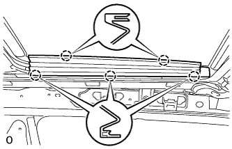
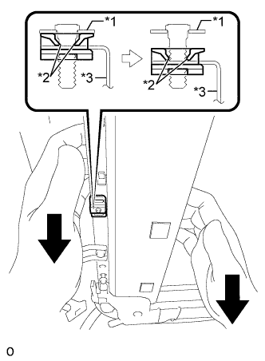
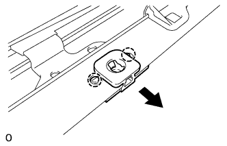

SLIDING ROOF HOUSING > REMOVAL |
| 1. DISCONNECT CABLE FROM NEGATIVE BATTERY TERMINAL |
| Condition | Waiting Time |
| Vehicle enrolled in G-BOOK system | 6 minutes |
| Vehicle not enrolled in G-BOOK system | 1 minute |
| 2. REMOVE ROOF HEADLINING ASSEMBLY |
Remove the roof headlining assembly (Click here).
| 3. REMOVE CURTAIN SHIELD AIRBAG ASSEMBLY LH |
Remove the curtain shield airbag assembly LH (Click here).
| 4. REMOVE CURTAIN SHIELD AIRBAG ASSEMBLY RH |
| 5. REMOVE SLIDING ROOF SIDE GARNISH LH |
|  |
Detach the 5 claws and remove the side garnish.
| 6. REMOVE SLIDING ROOF SIDE GARNISH RH |
| 7. REMOVE SLIDING ROOF GLASS SUB-ASSEMBLY |
 |
Using a T25 "TORX" driver, remove the 4 screws and glass.
| 8. REMOVE SLIDING ROOF WEATHERSTRIP |
Remove the sliding roof weatherstrip.
| 9. REMOVE SLIDING ROOF HOUSING SUB-ASSEMBLY |
Disconnect the 4 sliding roof drain hoses.
Remove the 8 bolts and 4 nuts.
Loosen the 4 nuts as shown in the illustration.
|  |
Pull the sliding roof housing sub-assembly downward and detach the 2 claws of the sliding roof lock catch plate RH from the stud bolt as shown in the illustration.
| *1 | Bracket (Roof Panel) |
| *2 | Sliding Roof Lock Catch Plate RH Claw |
| *3 | Sliding Roof Housing Sub-assembly |
Remove the 4 nuts and sliding roof housing sub-assembly.
|  |
Detach the 2 claws and remove the sliding roof lock catch plate RH from the sliding roof housing sub-assembly.